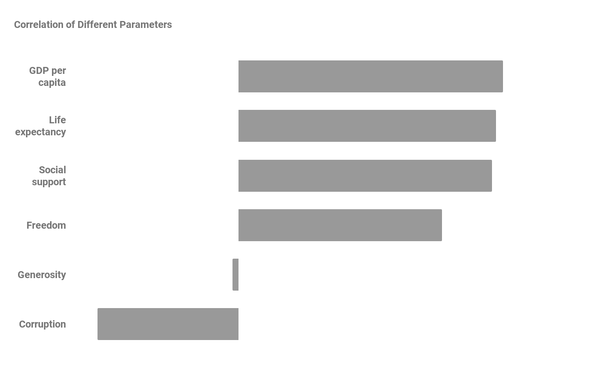

World happiness report’s dataset is a great dataset to make your hand dirty as a Data analyst. Today we can know, what is the world happiness report? What are the attributes used to measure happiness? which all attributes have a higher correlation with happiness?
World Happiness Report
World happiness report is published by Sustainable Development Solutions Network and they use 8 predictors to rank each country. This year theme focused on the effect of COVID-19 on happiness and how each country managed it.
Data Source
They collect data from international organisations like World Health Organisation(WHO), the world bank etc. Gallup is a Public opinion poll where people have to rate (1-10) to the questions asked
APPROACH
For the fundamental analysis, 10-year Segment wise data was collected from the corresponding annual reports of ITC as well as from other peer companies. This data was then processed in spreadsheets and data visualisation objects for the analysis was drawn from it. The link to the workbook is given here
So today we are going to look mainly on the 6 predictors of this report
GDP Per Capita
Gross Domestic Product (GDP) is the total market value of all the goods and services produced by the country during a specific time. So, here GDP of all countries are calculated and converted to international dollars to avoid currency exchange rate errors,
Next GDP per capita is calculated by dividing the entire value by the total population of the country. Hence, we get how much each individual contributed to the GDP. Finally, natural logarithm of each value is found for easy analysis
Life Expectancy
Life expectancy at birth is defined as the average age a newborn could expect to live if he or she were to pass through life subject to the age-specific mortality rates of a given period. Here, they are constructed based on data from the World Health Organization (WHO) Global Health Observatory data repository
Freedom To Choice
Freedom to Make Life Choices, It is the national average of binary(yes/no) responses to the Gallup World Poll question
"Are you satisfied or dissatisfied with your freedom to choose what you do with your life?"
Corruption
It is also the average of two Gallup question
"Is Corruption widespread throughout the government or not" & " Is corruption widespread within businesses or not
Generosity
"Have you Donated money to a charity in the past month" Average of responses to this Gallup question is took for Generosity
Social Support
Here also a Gallup survery question is asked "If you were in trouble, do you have relatives or friends you can count on to help you whenever you need them, or not?
Analysis
Our first job is to find the correlation of these 6 predictors with the happiness score, Correlation measures the degree to which two variables move in relation to each other, and the value falls between -1.0 & +1.0, +1.0 means if one variable goes up, other one will also go up in similar manner and vice versa for negative one
Let's plot a bar graph and see the result!
| Predictor | Correlation |
|---|---|
| GDP per capita | 0.7898 |
| Healthy life expectancy | 0.7681 |
| Social support | 0.7569 |
| Freedom to make life choices | 0.6078 |
| Generosity | -0.0178 |
| Perceptions of corruption | -0.4211 |

Thank you all for analysing World Happiness Report along with me, Do post your feedbacks and reviews as comments , I am happy to hear from you